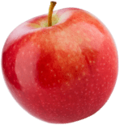
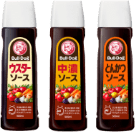

ブルドックソースは
かけるだけじゃなく
他の調味料とかけ合わせて
料理にも使えます！
ソース＝かけるものという
イメージがありますよね？
でも、ブルドックソースの定番ソースと
ご家庭にある味噌やケチャップ、
マヨネーズなどの調味料を
かけ合わせれば、
いろいろな料理が作れちゃうんです。
ブルドックソースが
いろいろな料理に使える秘密は？
-
理由 1
「野菜や果物」をふんだんに使用

-
理由 2
7種類以上のスパイスを独自ブレンド

-
理由 3
約30％は実はお酢でできている


だから！
料理にコクが生まれ、
味が引き締まる！
しかも、添加物
（着色料・増粘剤・甘味料）
不使用で安心です！



RECIPE

ブルドックソース × 調味料 でつくる スペシャルレシピ
ブルドックソースと
かけ合わせる調味料を選択すると
各レシピがご覧いただけます。
-
味噌

-
ケチャップ
-
マヨネーズ

-
めんつゆ

-
カレー粉